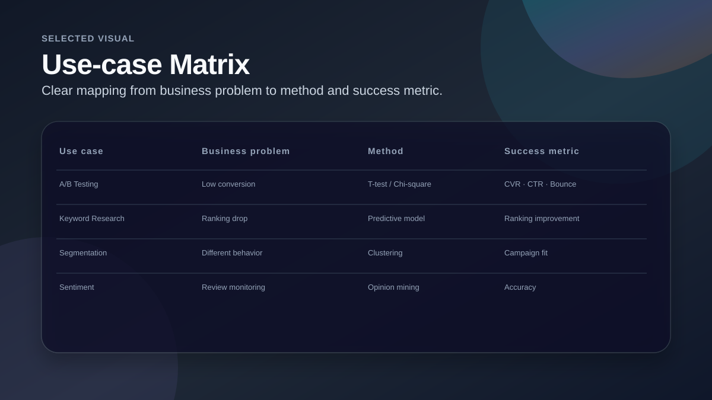
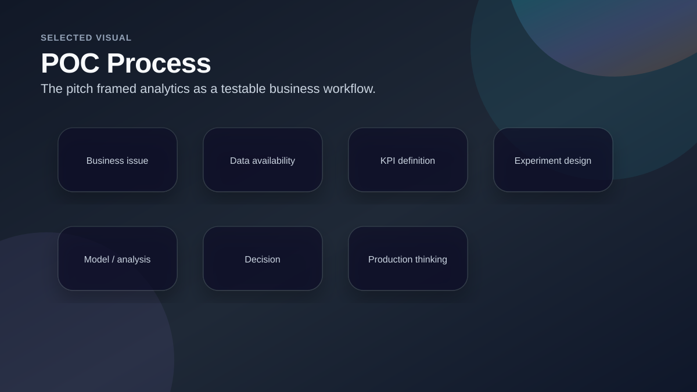
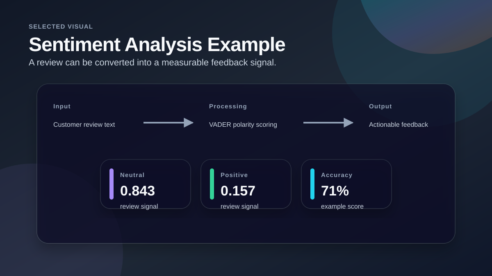

Data Science POC for Digital Marketing
A consulting-style proof-of-concept showing how data science methods can support digital marketing, SEO, experimentation and customer insight.

Project Snapshot
Business Question
The business needed a clear explanation of where data science could create value for digital marketing and how a proof of concept could be structured.
My Analytical Approach
- Mapped digital marketing problems to data science use cases.
- Defined business questions, hypotheses, methods and success metrics.
- Explained A/B testing, keyword prediction, segmentation and sentiment analysis in business terms.
- Outlined what a successful POC should include: data, metrics, experiment design and production thinking.
Selected Visuals from the Analysis

Use-case Matrix
Shows how each idea connects a business problem with a method and a success metric.

POC Process
Frames analytics as a repeatable process from business issue to production consideration.

Sentiment Analysis Example
Demonstrates how review text can be turned into a measurable customer feedback signal.
Key Findings
Clear use cases
A/B testing, keyword research, customer segmentation and sentiment analysis were the strongest examples for marketing teams.
Metrics first
Each use case needed a success metric before choosing a method or model.
Production thinking
The POC was not only about analysis, but also about whether the idea could be useful in a real business process.
Recommendations / Outcome
Start with one measurable use case
Choose a narrow business problem with clear data and a clear success metric.
Use experiment design
For website and campaign changes, define control/test groups before measuring impact.
Connect insights to action
Every model or analysis should end with a recommendation the marketing team can actually use.